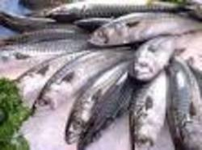
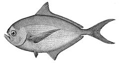
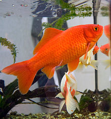
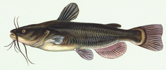

|
Salmon or Rawas |
Indian Salmon or Rawas is one of the most devoured fishes in India. Rawas is found in the western coast and is a big favorite with chefs for its succulent white meat; high yields and great taste. It is also favorite for Chef's and caterers and works out be a wonderful party planner fish.. Studies also suggest that consumption of salmon can prove to be beneficial for the eyesight and overall vision |
|  |
Surmai |
Surmai is also called Kingfish, a very healthy fish with high levels of proteins. It is best eaten in the slices/steaks form. Surmai belongs to the scrombroid family. Known to be the fast swimmer owing to their slender shape. |
|  |
Pomfrets |
Pomfrets are perciform fishes belonging to the family Bramidae. The family includes about 20 species.
They are found in the Atlantic, Indian, and Pacific Oceans, and the largest species, the Atlantic pomfret, Brama brama, grows up to 1 m (3.3 ft) long. The fish meat is white in color. |
 |
Indian mackerel |
The Indian mackerel (Rastrelliger kanagurta) is a species of mackerel in the scombrid family (family Scombridae) of order Perciformes.[2] It is commonly found in the Indian and West Pacific oceans, and their surrounding seas. It is an important food fish and is commonly used in South and South-East Asian cuisine. |
 |
Labeo rohita
|
The rohu, rui, or roho labeo (Labeo rohita) is a species of fish of the carp family, found in rivers in South Asia. It is a large omnivore and extensively used in aquaculture. |
 |
Catla |
Catla (Labeo catla), also known as the major South Asian carp, is an economically important South Asian freshwater fish in the carp family Cyprinidae. It is native to rivers and lakes in northern India, Bangladesh, Myanmar, Nepal, and Pakistan, but has also been introduced elsewhere in South Asia and is commonly farmed |
 |
Labeo kawrus |
Labeo kawrus, the Deccan labeo, is fish in genus Labeo. It is found only in the Krishna River system of the northern Western Ghats in the Indian states of Karnataka and Maharashtra. It occurs in the upper reaches of rivers, in lakes and reservoirs. It can grow to 60 cm in total length. Spawning commences with the onset of south-west monsoon |
 |
swamp barb
|
The swamp barb or chola barb, Puntius chola, is a tropical freshwater fish belonging to the Cyprininae sub-family of the (Cyprinidae) family. It originates in inland waters in Asia, and is found in Pakistan, India, Nepal, Bangladesh, Sri Lanka, Bhutan, and Myanmar. Puntius brevis is also sometimes known as swamp barb. |
|  |
goldfish
|
The goldfish (Carassius auratus) is a freshwater fish in the family Cyprinidae of order Cypriniformes. It is one of the most commonly kept aquarium fish. |
|  |
Catfish
|
Catfish (or catfishes; order Siluriformes or Nematognathi) are a diverse group of ray-finned fish. Named for their prominent barbels, which resemble a cat's whiskers, catfish range in size and behavior from the three largest species alive, the Mekong giant catfish from Southeast Asia, the wels catfish of Eurasia and the piraíba of South America, |